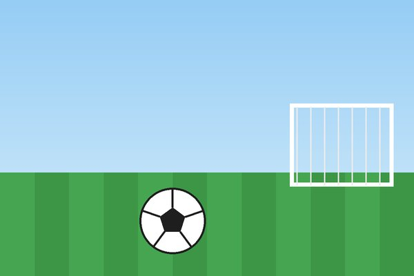
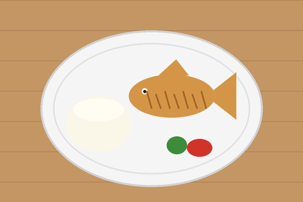
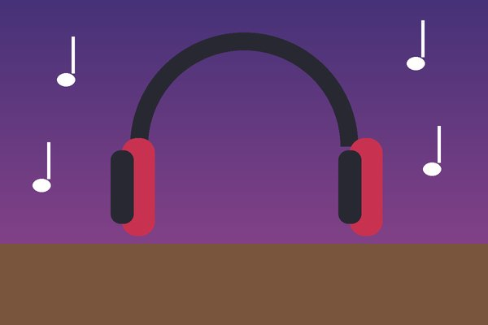
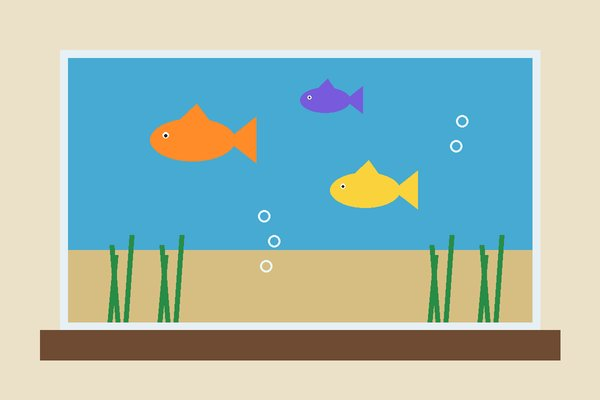

Football
Weekend matches with friends are how I clear my head after a long week. I love the teamwork, and a last-minute goal never gets old.

Weekend matches with friends are how I clear my head after a long week. I love the teamwork, and a last-minute goal never gets old.

My signature dish is fried tilapia with ugali and kachumbari. Studying fish and then eating them feels like practical homework.

Headphones on is my study mode. I switch between gospel, Afrobeats and Kenyan Gengetone depending on the mood.

Aquariums fascinate me. Watching how fish behave and react to the water helps me understand what I read in class.
I can name most common Kenyan freshwater fish by their shape alone: tilapia, catfish, Nile perch and omena.